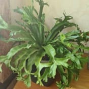
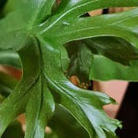
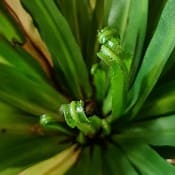
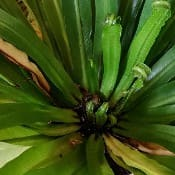
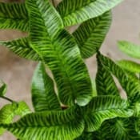
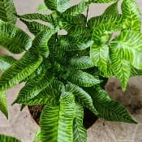
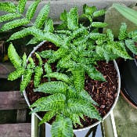
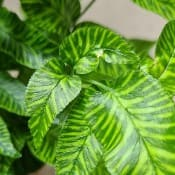

Nom
Exposition en été
Exposition en hiver
Arrosage en été
Arrosage en hiver
Rempotage
Asplenium nidus crissieVoir la galerie photo




Je le mets en intérieur ou dehors à partir de la deuxième quinzaine de Mai jusque courant Octobre dans une situation lumineuse ou elle ne recevra absolument pas de soleil.
Je le rentre durant les nuits descendant sous les 15°C.
Je le place en intérieur dans une pièce non chauffée ne descendant pas sous les 15°C pas très loin d'une fenêtre.
Je fais attention au soleil qui est sans danger mais, je préfère qu'elle n'en reçoive pas.
Je l'arrose de façon régulière et généreuse afin de garder le substrat toujours humide.
En général par bassinage car, la chaleur suffira à faire sécher la motte assez rapidement sans risque que la moisissure ne s'installe.
Je diminue les arrosages mais je cherche à toujours la motte trop humide.
Elle n'aime pas quand l'air est trop sec.
Je lui mets simplement du terreau pour plantes d'intérieur.
Je la garde dans un pot en plastique de taille moyenne.
Nom
Exposition en été
Exposition en hiver
Arrosage en été
Arrosage en hiver
Rempotage
Coniogramme emeiensisVoir la galerie photo




Je le laisse dehors dans une situation lumineuse ou elle ne recevra absolument pas de soleil.
Je le laisse dehors car elle est caduque et rustique.
Je protège juste le bac des gelées car en pot les plantes sont bien plus fragiles.
Je l'arrose de façon régulière et généreuse afin de garder le substrat toujours humide.
En général par bassinage car, la chaleur suffira à faire sécher la motte assez rapidement sans risque que la moisissure ne s'installe.
Je laisse faire la nature mais j'arrose juste si le substrat devient sec.
Elle n'aime pas quand l'air est trop sec.
Je lui mets simplement du terreau pour plantes d'intérieur mélangé avec de la fibre de coco.
Je la garde dans un pot en plastique de taille moyenne.
Je fais un léger surfaçage avec des fines écorces de pin.